La placa Arduino
Arduino es una placa con un microcontrolador: un ordenador diminuto que ejecuta un solo programa, una y otra vez, desde que le llega corriente. Sus pines son las patillas por las que se comunica con el exterior.
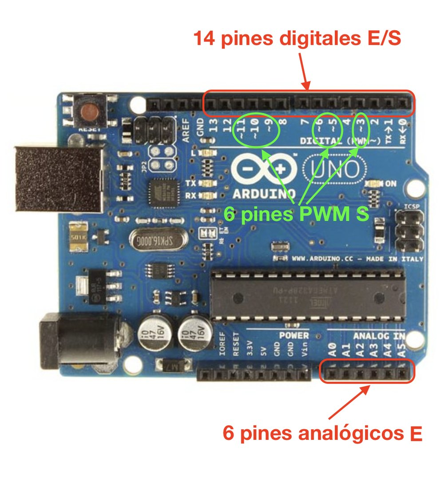
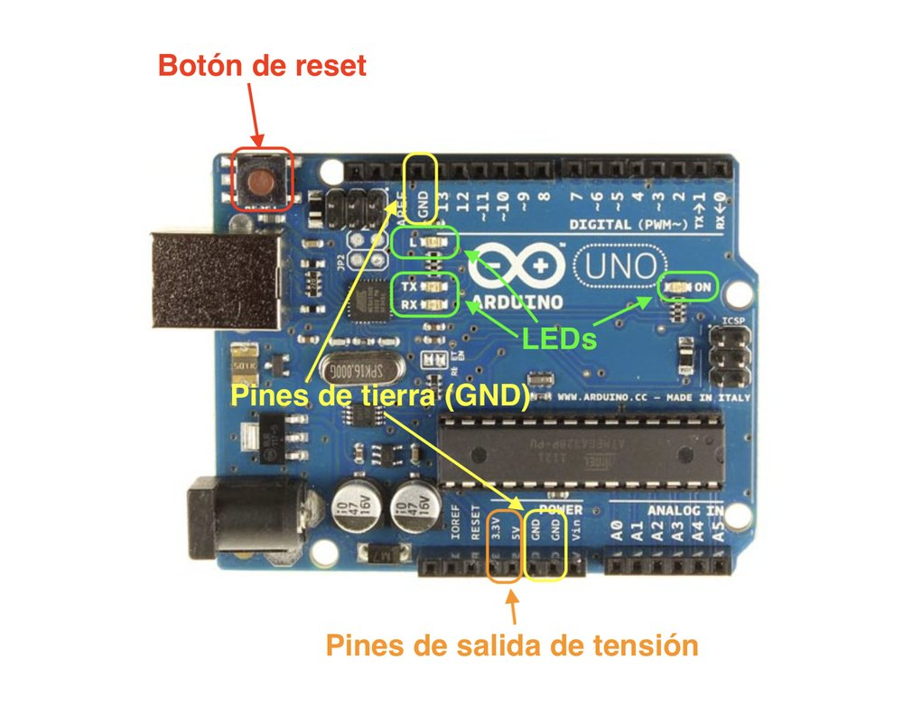
| Pines | Qué hacen |
|---|---|
| Digitales (0 a 13) | Como salida, dan 0 V o 5 V (apagado o encendido). Como entrada, leen si les llegan 0 V o 5 V. |
| Con el símbolo ~ (3, 5, 6, 9, 10 y 11) | Además pueden dar valores intermedios. Lo verás en la clase siguiente. |
| Analógicos (A0 a A5) | Leen cualquier tensión entre 0 y 5 V y la convierten en un número. |
| 5 V y GND | La alimentación de los componentes. GND es el polo de 0 V. |
El shield: todo ya conectado
Sobre tu placa va encajado el shield HY-M302. Trae luces, pulsadores y sensores ya conectados, cada uno siempre al mismo pin. Así no tienes que montar cables para empezar.
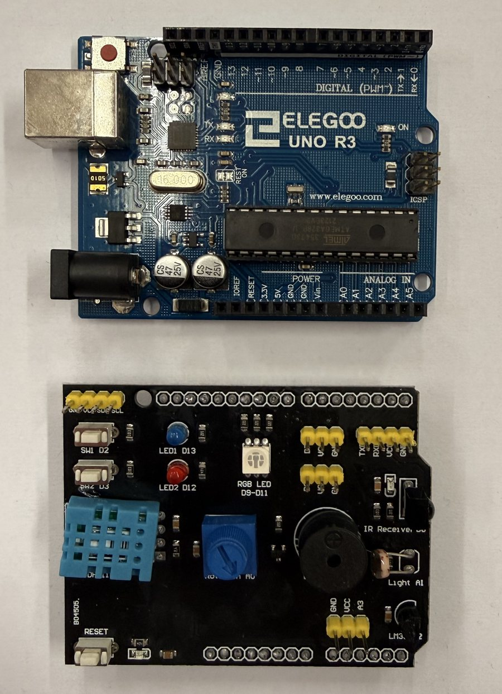

Cómo es un programa
Un programa de Arduino tiene dos partes fijas:
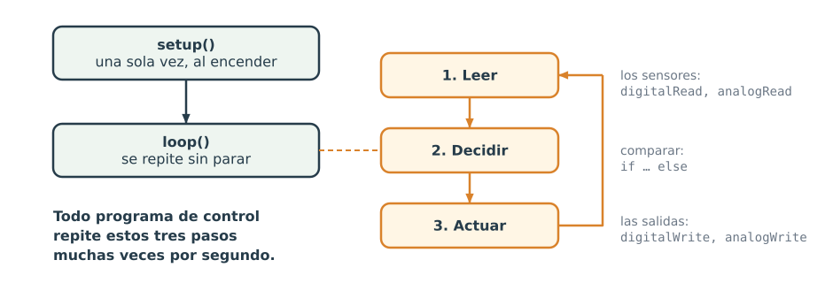
Tu primer programa: hacer parpadear el LED azul
// Parpadeo del LED azul del shield (pin 13)
const int LED_AZUL = 13;
void setup() {
pinMode(LED_AZUL, OUTPUT); // el pin 13 será una salida
}
void loop() {
digitalWrite(LED_AZUL, HIGH); // enciende: 5 V en el pin
delay(500); // espera medio segundo (500 ms)
digitalWrite(LED_AZUL, LOW); // apaga: 0 V en el pin
delay(500);
}| Línea | Qué significa |
|---|---|
const int LED_AZUL = 13; | Pone un nombre al pin 13. Desde aquí, escribir LED_AZUL es lo mismo que escribir 13, y el programa se entiende mejor. |
pinMode(LED_AZUL, OUTPUT); | Dice que ese pin será una salida. Va en setup() porque basta con decirlo una vez. |
digitalWrite(LED_AZUL, HIGH); | Pone el pin a 5 V (HIGH): el LED se enciende. Con LOW lo pone a 0 V y se apaga. |
delay(500); | Espera 500 milisegundos, es decir, medio segundo. 1000 ms = 1 s. |
// … | Lo que va detrás de dos barras es un comentario: el Arduino lo ignora y sirve para explicar el programa a las personas. |
;), y las llaves { } marcan dónde empieza y dónde acaba cada parte. Un punto y coma olvidado es el error más frecuente.1. Pruébalo en Tinkercad
- Entra en Tinkercad con tu usuario IdEA, como en la unidad de electrónica analógica.
- Pulsa + Crear y elige Circuitos. Arriba a la izquierda, cambia el nombre del diseño a Parpadeo.
- En el buscador de componentes escribe arduino y arrastra Arduino Uno R3 al área de montaje.
- Pulsa Código. Se abre el panel del programa en modo Bloques.
- Abre el desplegable del modo y elige Texto. Aparece un aviso: pulsa Continuar.
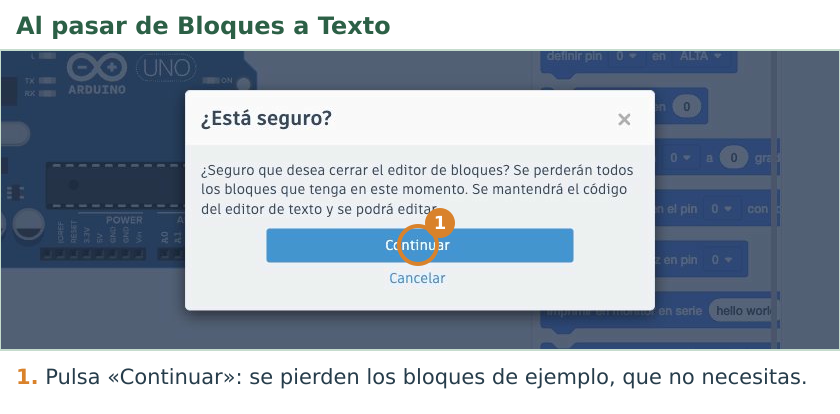
- Borra el programa de ejemplo y escribe el tuyo (o cópialo de esta página y pégalo).
- Pulsa Iniciar simulación. El LED «L» de la placa, que está unido al pin 13, parpadea.
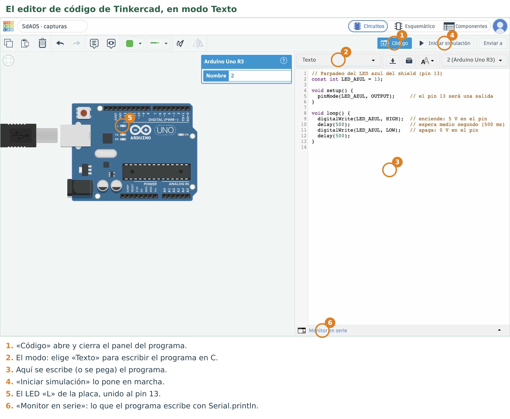
En el modo Bloques + texto puedes construir el programa con bloques y ver a la derecha el texto que les corresponde. Si te cuesta escribir, empieza por ahí; en el examen tendrás que leer y escribir el texto.
2. Súbelo a tu placa
- Conecta tu Arduino al ordenador con el cable USB. El shield ya está puesto.
- Abre Arduino IDE y crea un programa nuevo con Archivo → Nuevo: se abre una ventana vacía. Pega en ella tu programa. Los ordenadores del aula borran todo al apagarse, así que tu programa no se queda en el ordenador: lo guardas en Tinkercad y, cuando lo entregues, en Moodle.
- En Herramientas → Tarjeta elige Arduino Uno. En Herramientas → Puerto Serial elige el que aparece (en estos ordenadores se llama
/dev/ttyACM0o/dev/ttyUSB0). - Pulsa el botón Cargar (el de la flecha →): así se sube el programa a la placa. Abajo verás primero «Compilando el Sketch...», después «Cargando...» y, cuando acaba, «Carga terminada.»
- El LED azul del shield parpadea, y con él el LED «L» de la placa.
| Lo que ves | Qué compruebas |
|---|---|
| Sale un error al cargar y nada más | ¿Has elegido el puerto? Desconecta el USB, vuelve a conectarlo y míralo otra vez en Herramientas → Puerto Serial. |
| Un error que señala una línea | Mira la línea anterior: casi siempre falta un ; o una llave. |
| Se carga bien pero no parpadea | ¿Usas el pin 13? ¿Has escrito HIGH y LOW en mayúsculas? |
3. Tu Shield virtual en Tinkercad
Tinkercad no tiene el shield, pero puedes montar algo que se comporta igual: no son las mismas piezas ni están colocadas igual, pero van unidas a los mismos pines. Lo llamarás Shield virtual. Así, un programa que funciona en Tinkercad funciona igual en tu placa. Lo montas una sola vez y lo usarás en todos los retos, así que hazlo con calma. Hoy montas las luces y el zumbador; en las dos clases siguientes le añadirás los pulsadores y los sensores.
Recuerda cómo está unida por dentro la placa de pruebas: en cada columna numerada, los cinco agujeros de arriba (filas f a j) están unidos entre sí, y también los cinco de abajo (filas a a e); el canal del centro separa las dos mitades. Los carriles largos de los bordes (− y +) están unidos a lo largo.
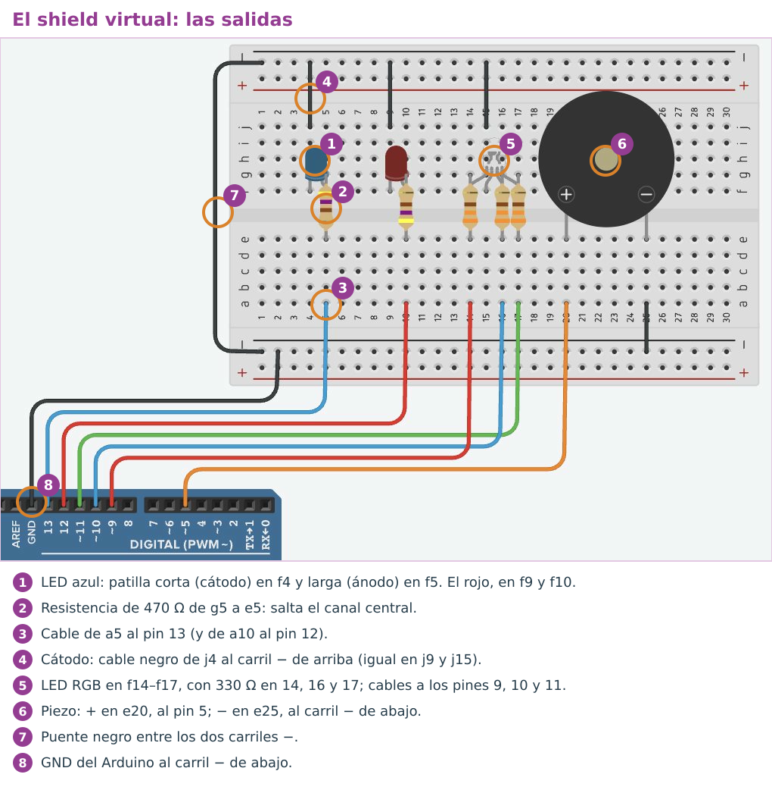
- Crea un diseño de Circuitos y llámalo Shield virtual. Arrastra un Arduino Uno R3 y, encima de él, una Placa de pruebas pequeña.
- Coloca dos LED en la mitad de arriba, con las patillas en la fila f: uno en f4 y f5, y otro en f9 y f10. La patilla corta, el cátodo, tiene que quedar a la izquierda (columnas 4 y 9). Haz clic en cada LED y, en Color, elige azul para el de la columna 4 y rojo para el de la columna 9.
- Coloca una Resistencia en vertical en la columna 5, de g5 a e5, y otra en la columna 10, de g10 a e10: cada una sale de la patilla larga de su LED y salta el canal del centro. Cambia su valor a 470 Ω.
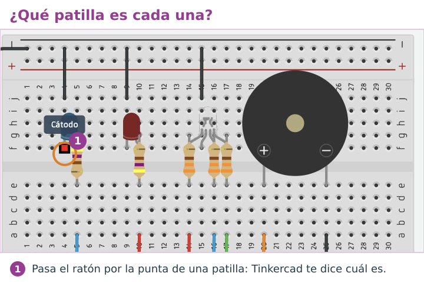
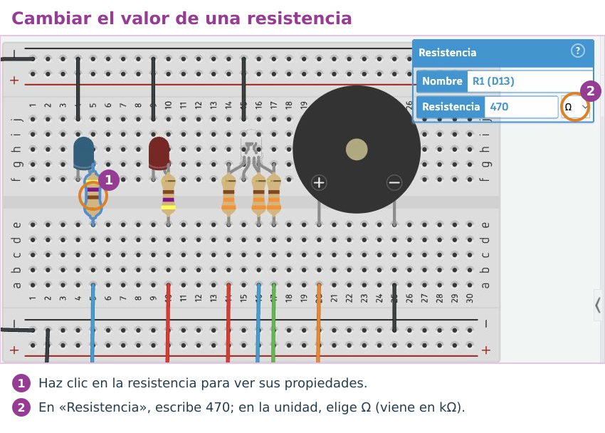
- Coloca un LED RGB con las patillas en f14, f15, f16 y f17. Pasa el ratón por ellas: de izquierda a derecha son Rojo, Cátodo, Azul y Verde. Pon una resistencia de 330 Ω en las columnas 14, 16 y 17, de g a e, igual que las de los LED. La del cátodo (15) no lleva.
- Coloca un Piezo, que hace de zumbador, con sus patillas en e20 (+) y e25 (−).
- Haz los cables. Para crear uno, haz clic en un pin o en un agujero y después en el otro extremo; cada clic en una zona vacía hace un codo. Con el cable seleccionado, puedes cambiarle el color en la barra de arriba. Une:
| Desde | Hasta | Para qué |
|---|---|---|
| Pin 13 | a5 | LED azul (con su resistencia) |
| Pin 12 | a10 | LED rojo |
| Pin 9, pin 10 y pin 11 | a14, a16 y a17 | Rojo, azul y verde del LED RGB |
| Pin 5 | a20 | Piezo (+) |
| j4, j9 y j15 | Carril − de arriba | Cátodos de los tres LED |
| a25 | Carril − de abajo | Piezo (−) |
| GND del Arduino | Carril − de abajo | La tierra común |
| Carril − de arriba | Carril − de abajo | Un puente por el lado izquierdo, para que los dos carriles sean GND |
- Comprueba el montaje: pega este programa de prueba en el modo Texto y pulsa Iniciar simulación. Tienen que encenderse por turnos el LED rojo, el azul y los colores rojo, azul y verde del LED RGB, y después sonar un pitido. Si algo no se enciende, revisa su columna y su cable en la tabla.
Programa de prueba del Shield virtual
// Prueba del Shield virtual: las luces se encienden por turnos y después suena un pitido
const int ZUMBADOR = 5;
const int RGB_ROJO = 9;
const int RGB_AZUL = 10;
const int RGB_VERDE = 11;
const int LED_ROJO = 12;
const int LED_AZUL = 13;
void setup() {
pinMode(LED_ROJO, OUTPUT);
pinMode(LED_AZUL, OUTPUT);
pinMode(RGB_ROJO, OUTPUT);
pinMode(RGB_AZUL, OUTPUT);
pinMode(RGB_VERDE, OUTPUT);
}
void loop() {
digitalWrite(LED_ROJO, HIGH); // LED rojo
delay(500);
digitalWrite(LED_ROJO, LOW);
digitalWrite(LED_AZUL, HIGH); // LED azul
delay(500);
digitalWrite(LED_AZUL, LOW);
digitalWrite(RGB_ROJO, HIGH); // LED RGB: rojo
delay(500);
digitalWrite(RGB_ROJO, LOW);
digitalWrite(RGB_AZUL, HIGH); // LED RGB: azul
delay(500);
digitalWrite(RGB_AZUL, LOW);
digitalWrite(RGB_VERDE, HIGH); // LED RGB: verde
delay(500);
digitalWrite(RGB_VERDE, LOW);
tone(ZUMBADOR, 880, 200); // un pitido corto
delay(1000);
}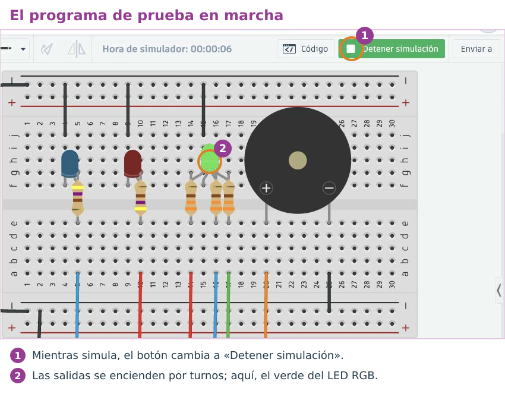
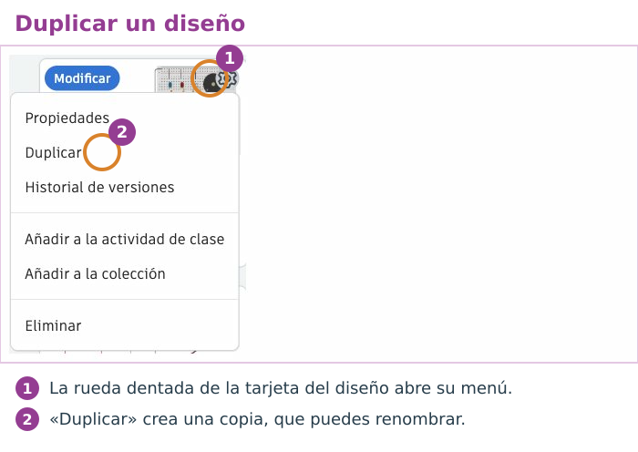
El reto de hoy
Reto R1 · Secuencia con dos luces
Programa esta secuencia con los dos LED del shield (azul en el 13 y rojo en el 12), y que se repita sin parar: azul encendido 0,8 segundos; después rojo encendido 0,3 segundos; después los dos apagados 1 segundo. Pruébala primero en Tinkercad, en una copia de tu Shield virtual llamada Reto R1 - Secuencia. Después, en tu placa.
Está conseguido cuando… en tu placa se ve la secuencia con los tiempos pedidos y se repite.
Si te atascas: el programa con huecos
Rellena cada ____: cada hueco es una palabra, un número o un signo que ya has visto en esta página.
// Reto R1: secuencia con los dos LED del shield
const int LED_AZUL = 13;
const int LED_ROJO = 12;
void setup() {
pinMode(LED_AZUL, OUTPUT);
pinMode(____, OUTPUT);
}
void loop() {
digitalWrite(LED_AZUL, HIGH); // 1. azul encendido
digitalWrite(LED_ROJO, LOW);
delay(____);
digitalWrite(LED_AZUL, ____); // 2. rojo encendido
digitalWrite(LED_ROJO, ____);
delay(300);
digitalWrite(LED_ROJO, LOW); // 3. los dos apagados
delay(____);
}Cuando funcione en la placa: enséñalo funcionando para que se anote en la lista de los retos. Después, en la tarea de Moodle Retos Arduino (código), pulsa Editar entrega (la primera vez, Agregar entrega), escribe R1 y pega debajo tu programa. Pulsa Guardar cambios. Cada reto nuevo va debajo del anterior.
Compruébalo
Elige la respuesta correcta.